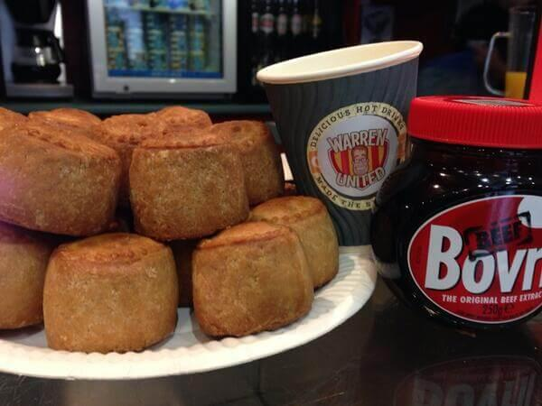

Yesterday Warren and his family came to life on Prince Charles Cinema's big screen. Warren United, Baby Cow's latest animated series, about football and family was screened to cast and press for a football themed preview complete with match-side snacks.
Warren United is set to broadcast to the 22 April to kick off with the UEFA Champions League semi-finals. The six parts series follows the fortunes of Warren Kingsley, an overweight kitchen salesman and fervent football fan, as he stumbles through life trying to juggle his two passions – football and family. Warren is a bloke of two halves: both a devoted husband and dad and a diehard fan of Brainsford United, a chronically struggling club, known to its long-suffering fans as "The Meringues."
"It's about the two most important f's in life – family and football," says executive producer Bill Freedman, Warren has been his brainchild for over eight years. "This show is also about the passion of being a fan. Yes, supporting Brainsford United often brings Warren more pain than joy but that's what makes him a true fan."